Purpose
This node uses two EDL files as input and checks each event to see if there has been any editing changes between them.
Based on that it then creates a new EDL with markers indicating how much trimming has been done, and if any new event have happened.

The EDL with markers generated can be either in Mistika/Avid or DaVinci Resolve format.
As in the EDL itself there is no information about the framerate used, it must also be indicated to compute the differences in timecode between each event.
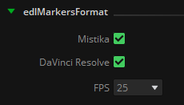
It is also possible to determine the color of the marker used to indicate the edit changes detected and new events separately.
Events that do not present any edit change (which means that they have the same source and rec tc in/out) will not generate any marker and will be omitted.
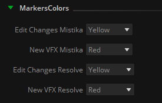
It is important to note that normally editors work with the transcoded footage keeping the original clip name across the whole edit process (i.e. A003C007_220930_RNFD). While re-conforming this clips is not a big issue, it can become messy when VFX plates and other elements have already been exported and started to be worked on by the VFX department. These plates may have or not handles, and even if they have them they may not be enough when there is a re-edit of a whole VFX sequence. Furthermore, one same clip can be used several times in the same sequence, so comparing different events that have all of them the same clip name will lead to excessive and redundant information about performed trims of that clip. Only in ideal circumstances the editor will be able to substitute the original clip with the exported VFX so its name will be included in the next .edl export However, this isn't guaranteed, and the VFX clip might not even be in the previous .EDL export. This makes it practically impossible to compare them.
Therefore it is strongly recommended to feed the EDL Edit Changes node with EDL files that contain directly the VFX name in each event: VFX name assignment is unique (or should be), and it is the only way to have unequivocal results when comparing edit changes between all events in both EDLs, before and after the re-edit performed. In order to generate these edls with the VFX name in the events, the EDL To Markers node can be used as follows:
To start with, we have two EDLs generated by the editor, before and after the re-edit, with markers in every event to determine the VFX name:

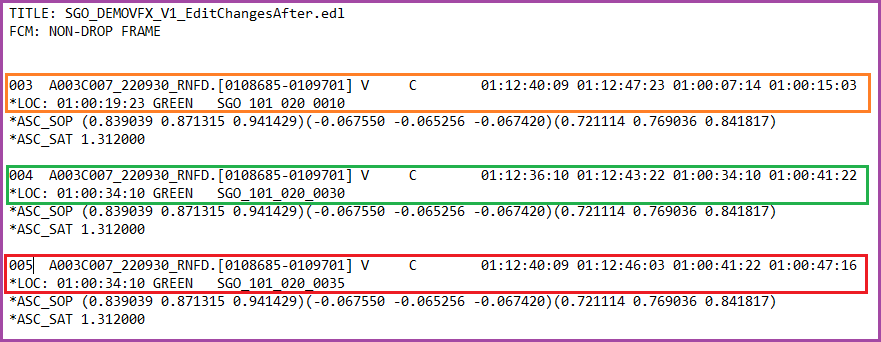
We can observe that the whole edit uses the same clip throughout all the cuts, and also a new VFX has been added in the last edit.
Event 003 has its tail trimmed and moved in the timeline, event 004 has no changes, and event 005 is a new vfx that wasn’t declared before.
Then with the EDL To Markers node we process both EDLs and get new ones with its corresponding VFX name in the event tapename, thus eliminating the reference to the original clip name:
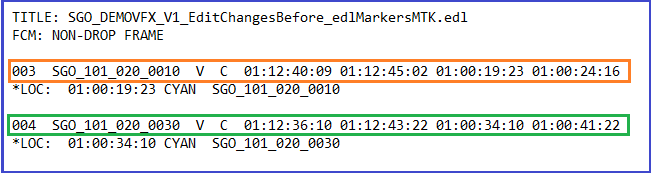
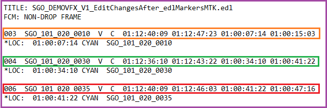
Having already unequivocal names for each EDL event in each of the EDL files, we can thereby make use of the EDL Edit Changes node to look for timecode differences.
The new generated EDL can be used to conform the affected VFX, and will show information about each event trimmed and/or moved in the timeline in the form of notes added to each marker:
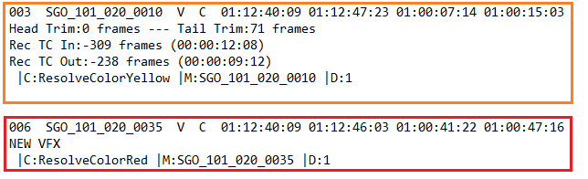
In the following example we can see how a workflow can be built making use of both - EDL To Markers and EDL Edit Changes nodes.
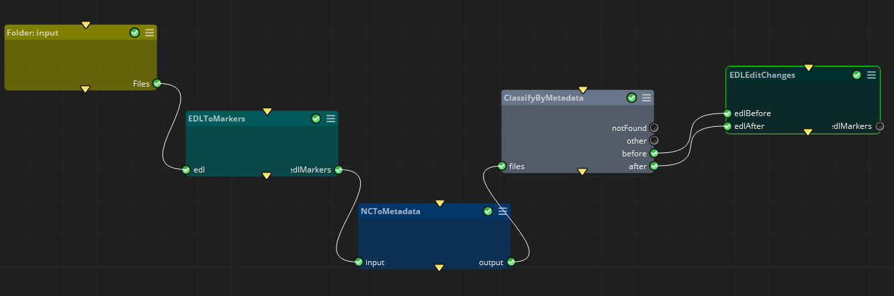
In this case our input are two EDL files corresponding to the previous and actual edit:
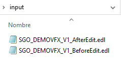
Then we generate another EDL for each one with the EDL to Markers node, and establish a name convention suitable to extract the needed tokens in order to classify the files by the following metadata:
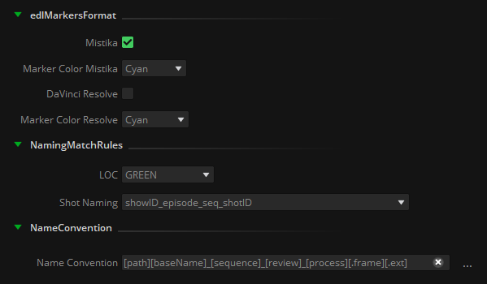
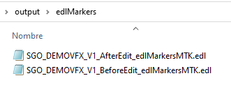
Finally, we make use of the ClassifyByMetadata node to separate both edit steps and feed separately the EDL Edit Changes node:
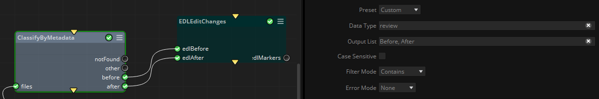
As we can see, we have generated two EDL files with markers for Mistika/Avid and DaVinci Resolve formats.
These can be directly imported into the timeline, allowing for immediate integration into the editing process. This eliminates the need for operators to spend time comparing reference movies to identify differences or referring to auxiliary documents like Excel tables or PDF reports to discern changes between the cuts.
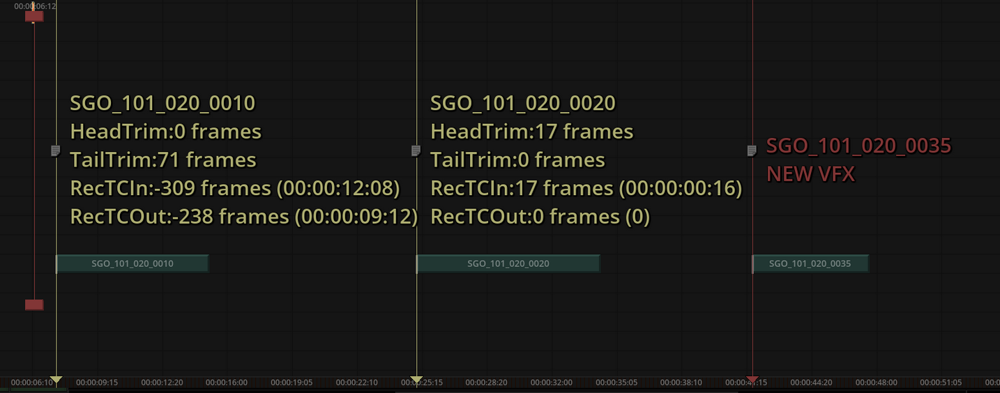
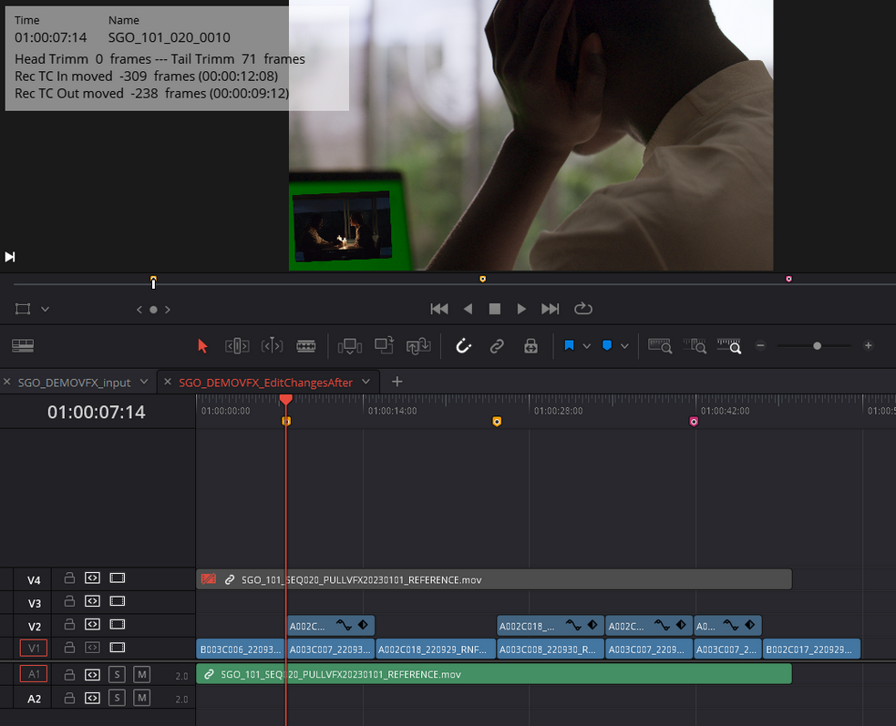
Inputs
edlBefore: EDL file containing the cut information before the edit change.
edlAfter: EDL file containing the cut information after the edit change.
Outputs
edlMarkers: .edl files for each format selected in the ‘edlMarkersFormat’ containing markers and comments about the edit changes detected.
.
Standard properties
Object Name
Color
Bypass
Name Convention
Python standard properties
code
NOTE: An introduction to all the Python tools in Mistika Workflows is available in the Python scripting tools section.
Node specific properties
EDL Path: Folder to store the .edl files created by this node.
edlMarkersFormat: Toggles to select Mistika/Avid or DaVinciResolve format, as well as the framerate to be used to compute the timecode differences between both EDL files
MarkersColors
Edit Changes Mistika: Pulldown menu with the available colors in Mistika/Avid format to generate the markers when an edit change has been detected.
New VFX Mistika: Pulldown menu with the available colors in Mistika/Avid format to generate the markers when a new VFX event has been detected.
Edit Changes Resolve: Pulldown menu with the available colors in DaVinci Resolve format to generate the markers when an edit change has been detected.
New VFX Resolve: Pulldown menu with the available colors in DaVinci Resolve format to generate the markers when a new vfx event has been detected.